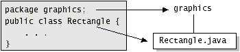
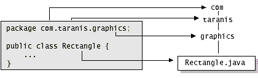
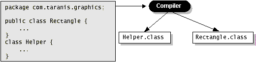
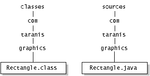

Feedback Form
|
|
Start of Tutorial > Start of Trail > Start of Lesson |
Search
Feedback Form |
Many implementations of the Java platform rely on hierarchical file systems to manage source and class files, although The Java Language Specification does not require this. The strategy is as follows.You put the source code for a class or an interface in a text file whose name is the simple name of the class or the interface and whose extension is
.java. Then you put the source file in a directory whose name reflects the name of the package to which the class or the interface belongs. For example, the source code for theRectangleclass would be in a file namedRectangle.java, and the file would be in a directory namedgraphics. Thegraphicsdirectory might be anywhere on the file system. The figure below shows how this works. The qualified name of the package member and the path name to the file are parallel, assuming the UNIX file name separator slash (/):
class name graphics.Rectanglepathname to file graphics/Rectangle.javaAs you may recall, by convention a company uses its reversed Internet domain name in its package names. The fictional company whose Internet domain name is
taranis.comwould precede all its package names withcom.taranis. Each component of the package name corresponds to a subdirectory. So if Taranis had agraphicspackage that contained aRectangle.javasource file, it would be contained in a series of subdirectories, as shown below.
 When you compile a source file, the compiler creates a different output file for each class and interface defined in it. The base name of the output file is the name of the class or the interface, and its extension is
.class, as shown in the following figure. Like a
.javafile, a.classfile should also be in a series of directories that reflect the package name. However, it does not have to be in the same directory as its source. You could arrange your source and class directories separately, as shown below. By doing this, you can give the classes directory to other programmers without revealing your sources.
Why all the bother about directories and file names? You need to manage your source and class files in this manner so that the compiler and the interpreter can find all the classes and interfaces your program uses. When the compiler encounters a new class as its compiling your program, it must be able to find the class so as to resolve names, do type checking, and so on. Similarly, when the interpreter encounters a new class as its running your program, it must be able to find the class to invoke its methods, and so on. Both the compiler and the interpreter search for classes in each directory or ZIP file listed in your class path.
Definition: A class path is an ordered list of directories or ZIP files in which to search for class files.Each directory listed in the class path is a top-level directory in which package directories appear. From the top-level directory, the compiler and the interpreter can construct the rest of the path, based on the package and the class name for the class. For example, the class path entry for the directory structure shown in the previous diagram would include
classesbut notcomor any of the directories belowcom. Both the compiler and the interpreter construct the path name to a.classfile with its full package name.By default, the compiler and the interpreter search the current directory and the ZIP file containing the Java platform class files. In other words, the current directory and the Java platform class files are automatically in your class path. Most, if not all, classes can be found in these two locations. So its likely that you don't have to worry about your class path. In some cases, however, you might have to set your class path.
|
|
Start of Tutorial > Start of Trail > Start of Lesson |
Search
Feedback Form |
Copyright 1995-2004 Sun Microsystems, Inc. All rights reserved.